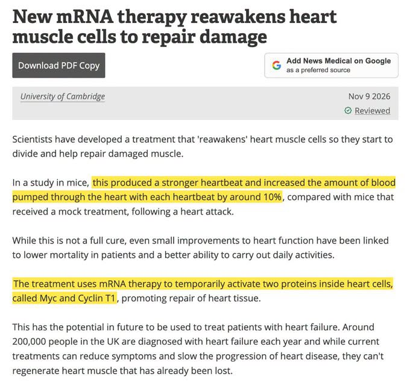

Reawakening the Heart: A Breakthrough in Heart Attack Recovery
Imagine if your heart could heal itself after a heart attack just like a scraped knee heals over time. For decades, medical science has faced a harsh biological reality: once adult human heart muscle cells (cardiomyocytes) mature, they lose their ability to divide and multiply. When a heart attack strikes, those starved cells die, leaving behind rigid scar tissue that permanently weakens the heart and frequently leads to chronic heart failure.
//www.nature.com/articles/s44161-026-00910-7
However, a groundbreaking study published in Nature Cardiovascular Research by researchers at the University of Cambridge changes the narrative, demonstrating that it may be possible to coax damaged heart tissue back to life.
The Secret: A Temporary Genetic "Wake-Up Call"
The research team utilized messenger RNA (mRNA) technology—the same versatile platform utilized in modern vaccines—to deliver a short-lived instruction manual directly to the heart.
Rather than permanently editing a patient's DNA, the treatment introduces modified mRNA that temporarily activates two key proteins inside the heart cells: Myc and Cyclin T1.
- The Spark: These two proteins act like a biological ignition switch, convincing mature, resting heart muscle cells to break out of retirement and start dividing again.
- The Safety Valve: Because mRNA naturally degrades quickly in the body, the activation is strictly temporary. This is critical because uncontrolled, permanent cell division in the heart could lead to dangerous complications like tumors. Once the mRNA fades, cell division stops safely.
Promising Results in Pre-Clinical Tests
When researchers tested this transient mRNA therapy on mice recovering from myocardial injuries (heart attacks), the results were compelling:
- Treated hearts showed a measurable improvement in overall pumping strength, increasing the blood volume pumped per beat by roughly 10% compared to control groups.
- Long-term checkups at 28 days and 12 weeks showed that the recovery benefits persisted, with no adverse side effects detected.
Looking Ahead to Human Medicine
While these findings are still at an early pre-clinical stage, they represent a monumental conceptual shift in cardiology. Moving forward, researchers will need to test the safety and effectiveness of the therapy in larger animal models before human clinical trials can begin. If successful, this approach could eventually shift heart attack treatment from merely managing long-term decline to true cellular regeneration.
#RegenerativeMedicine #CardiologyResearch #HeartHealth
